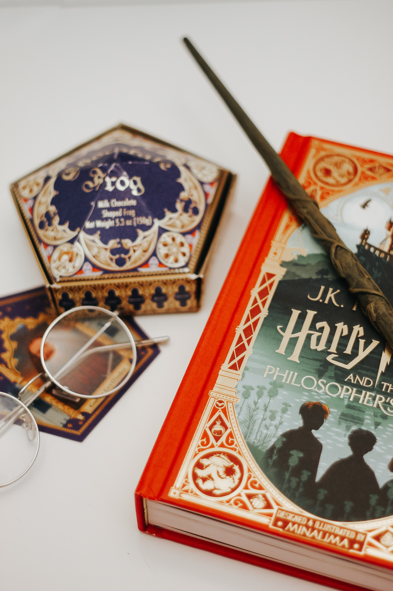

Merhaba ben Yasemen Yozgat'ta yaşıyorum. En sevdiğim hobim gezmek yeni yerler keşfetmek özellikle deniz olan şehirleri çok seviiyorum.Yabancı film ve dizi izlemeyi de 2.sıraya alabilirim evden çıkmadığımız pandemi günlerinde özellikle. Bilimkurgu uzay zaman filmleri favorimdir
Predestination filmi kendi içinde birden fazla kişilik taşımayı ve kendi ruh eşinin yine kişinin kendisi olduğu fikrine kaptırmıştır beni ve filmi ilk izlediğimde bitince yarım saat boş boş bakmıştım tavana.Zaman yolculuğu konusu zaten favori konumdur.
Chocolate frog and book
